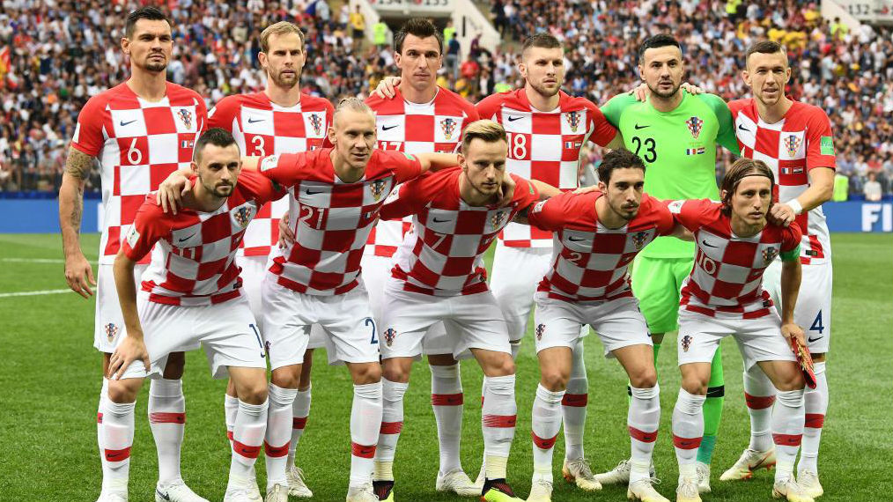

Ranking FIFA: 15° (agosto 2022).
¿Cómo se clasificó al Mundial? Ganó el Grupo H de las Eliminatorias Europeas.
Rendimiento en 2021 (G-E-P): 8-4-4 (29 GF, 14 GC, +17).
Rendimiento en 2022: 4-2-1 (6 GF, 6 GC,0).
Ivo Grbic
Josip Juranovic
Dejan Lovren
Josko Gvardiol
Borna Sosa
Luka Modric
Marcelo Brozovic
Mario Pasalic
Nikola Vlasic
Andrej Kramaric
Ivan Perisic.
Nacionalidad croata.
Edad: 55 años (llegará al Mundial con 56, los cumple en octubre).
Contratado: 7 de octubre del 2017.
Récord en el cargo (G-E-P): 29-14-17.
Títulos en el cargo: Ninguno.
Victoria más notable: 2-1 sobre Inglaterra, semifinal del Mundial 2018.
1930 Uruguay *
1934 Italia *
1938 Francia *
1950 Brasil *
1954 Suiza *
1958 Suecia *
1962 Chile *
1966 Inglaterra *
1970 México *
1974 Alemania *
1978 Argentina *
1982 España *
1986 México *
1990 Italia *
1994 Estados Unidos **
1998 Francia 3°
2002 Corea y Japón 23°
2006 Alemania 22°
2010 Sudáfrica -
2014 Brasil 19°
2018 Rusia 2°
